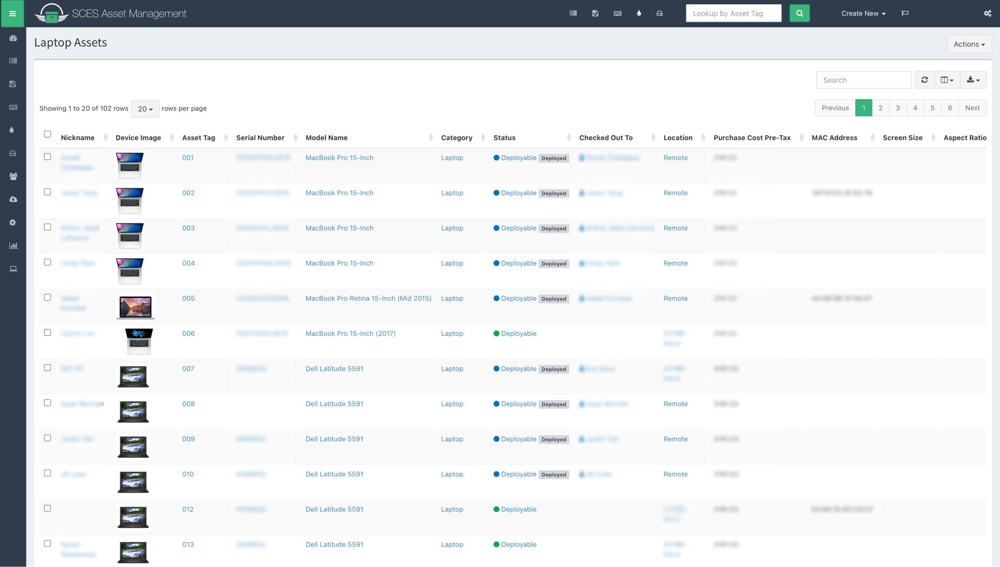
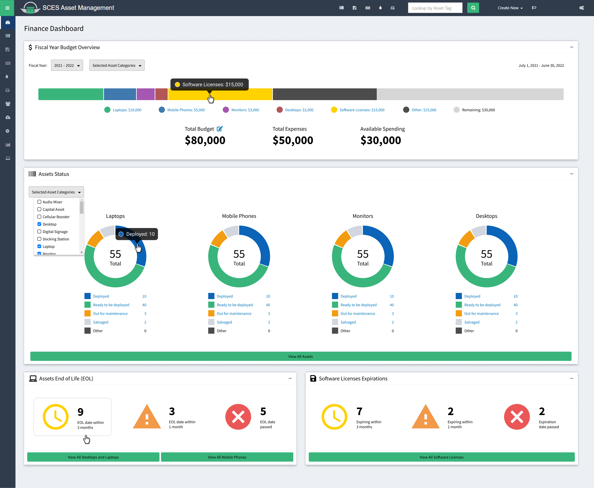

The Asset Management System (AMS) is a web application for managing IT assets (laptops, smartphones, etc.) and software licenses. Each asset in the system has data associated with it, such as purchase date, end-of-life/expiration date, cost, current employee it belongs to, and more. Assets and software licenses in AMS are searchable, sortable, and filterable. However, there wasn’t any way to conveniently view data related to groups of assets.

The finance department at the Student Center needs an easier way to do budgeting for IT assets instead of manually doing so on Excel. They also need to see a general overview of assets to make managing them easier. Since AMS keeps an active database of IT assets, it can be leveraged to suit their needs. To meet the finance team’s needs, I designed a dashboard with an overview of a fiscal year’s IT budget, statuses for different categories of assets, and upcoming asset expirations.
I led multiple stakeholder meetings with the finance manager and other members of the finance team to discover what they needed from AMS in order to help them with budgeting. After learning about their needs, I designed a finance dashboard for AMS and iterated on the design based on feedback. For example, the Assets Status section of the dashboard went through some iterations.
AMS was built using Snipe-IT, an open source software. This allowed developers to quickly create AMS without starting from scratch. Rather than create an entirely new design system to implement for the finance dashboard and every other page, I opted to remain consistent with the styling from Snipe-IT. I used components from the styling of Snipe-IT to minimize developer work and production time while still maintaining high quality UI/UX. The outlier to Snipe-IT’s UI were some custom graphs that I wanted to have for data visualization. After meeting with developers, it was decided that the dashboard would use graphs from Chart.js, an open-source Javascript library for data visualization. When making each of these graphs, I made sure with the development team that they were possible to implement given the data being collected for each asset.

Fiscal Year Budget Overview Section:
This section provides a budget overview of IT spending for a given fiscal year (July 1 - June 30). When a user clicks on a section of the bar chart or the name of the section, it will reveal a new page with a list of the selected assets. For example, clicking on the Laptops section of the bar chart would reveal a list of Laptops purchased during that fiscal year.
Assets Status Section:
Laptops, mobile phones, monitors, and desktops were selected as the most important assets to keep track of by the finance team. However, in the event that asset prioritization changes, there is a drop-down list that can change which asset statuses are displayed.
Assets End of Life and Software License Expiration Sections:
This section shows which assets or licenses are reaching or have reached their expiration date. This data would allow the finance team to ensure that assets and licenses are kept up-to-date.